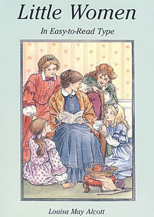
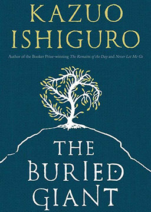

双语小说
收录中英文双语小说300多部，包括世界经典名著、社会小说、悬疑小说等短篇和长篇小说，可按照初中难度、高中难度和大学难度分类阅读，每部小说都有分段中英文对照，点击单词可查看中文翻译。

小妇人（简化版） (Little Women)
作者：路易莎·梅·奥尔柯特 (Louisa May Alcott) [美国]
本书以19世纪中期美国南北战争为背景，生动描写了作者亲身经历的家庭生活：父亲参加北军出征，四姐妹伴着慈爱的母亲，过着清贫而富有乐趣的生活。全书歌颂了家庭的伦理观念，邻里间的助人为乐。本书是享誉全球的家庭小说，译本多达100种；美国教育协会指定的“25种小学必备书”榜首；美国国会图书馆“全世界畅销的优秀作品”之一；英国《卫报》“生命中百本必读书之一”。
小妇人 (Little Women)
作者：路易莎·梅·奥尔柯特 (Louisa May Alcott) [美国]
公认的美国名著，100多年以来，一直受到热烈的欢迎。美国图书协会、美国教育协会两会代表选入100种乡村小学的必备书，其中精选25种，《小妇人》列居25种的榜首，世界上已有数十种不同语言的译本，20世纪30年代此书也风靡了中国大陆。内容简介：美国内战期间，马奇先生远赴战场做了随军牧师，四个女儿和母亲在家里过着清苦却坚强乐观的生活。她们虽贫穷却乐意帮助比她们更需要帮助的邻居赫梅尔一家。女人都有着虚荣心，她们希望得到漂亮的衣服，吃到可口的食物，过着如公主一样的生活。尽管充满幻想，但在现实生活中，她们一直在凭借自己的努力来解决生活中的种种艰难困苦。大女儿梅格生性爱美，对恋爱充满憧憬；二女儿乔独立自主，矢志成为作家；三女儿贝丝则是传统乖乖女，柔弱而惹人怜爱；小女儿艾米则钟爱绘画。故事追随这四位女性由女孩成长为小女人的岁月，讲述了她们不羁的爱情经历及她们各自追寻不同理想与归宿的过程。别有洞天 (Holes)
作者：路易斯·萨奇尔 (Louis Sachar) [美国]
曾荣获1999年纽柏瑞儿童文学奖的金牌，是一部十分精采有趣的儿童文学作品。故事简介：少年史丹利被冤枉偷了足球明星的球鞋而来到绿湖少年管教营，终日从事一项惨无人道的苦役，在干涸如岩的湖床上顶着烈日挖洞。出人意料的是，挖洞竟挖出了一个天大的秘密：在这片荒凉的土地下，埋藏着几个家族上百年盘根错节的恩怨。史丹利和他的伙伴零蛋在不堪忍受苦役和虐待的逃亡过程中结下了生死情谊，并最终揭露了绿湖营“挖洞”的大骗局，化解了家族之间的恩怨诅咒。善良的人们获得了幸福的归宿，而恶人受到惩罚。
群山回唱 (And the Mountains Echoed)
作者：卡勒德·胡赛尼 (Khaled Hosseini) [阿富汗]
美籍阿富汗裔作家卡勒德·胡塞尼第三部小说，2013年5月21日在美国首发，出版5个月，销量就突破300万册。荣获美国亚马逊书店2013年上半年最佳图书、美国独立书店排行第一、巴诺书店（Barnes & Noble）畅销榜首、书店店员首选推荐上半年度最佳小说、美国国家公共电台（NPR）夏季最佳图书、ABC《早安美国》读书俱乐部夏季最佳图书。故事简介：讲述了一对兄妹因贫穷和战争铸成的六十年悲欢离合。围绕父母、兄妹、甚至表亲和继母，他们如何去爱，如何被伤害，如何相互背叛，如何为彼此牺牲。 这部小说形式类似短篇小说集，整部小说一共九章，分别由九个不同人物作为第一人称来讲述故事。小说不仅延续了胡塞尼一贯的悲伤和温情风格，而且小说技巧更加丰富圆熟，被誉为胡塞尼迄今最具野心的一部小说。灿烂千阳 (A Thousand Splendid Suns)
作者：卡勒德·胡赛尼 (Khaled Hosseini) [阿富汗]
美籍阿富汗裔作家卡勒德·胡赛尼的第二本小说，出版之前即获得极大关注，2007年5月22日在美国首发，上市仅一周销量就突破100万册，赢得评论界一致好评，被很多评论家赞誉为“超越《追风筝的人》的伟大作品”。内容简介：玛丽雅姆在阿富汗一个偏远贫穷的地方长大，她想上学，母亲却告诫她：“ 学校怎么会教你这样的人，一个女人只要学一样本领，那就是忍耐。”私生女玛丽雅姆的童年在十五岁生日时一去不复返：母亲自杀，定期探访的父亲也仿佛陌路。她成为了喀布尔中年鞋匠拉希德的妻子，生活在动荡年代的家庭暴力阴影下。十八年后，战乱仍未平息，少女莱拉失去了父母与恋人，亦被迫嫁给拉希德。两名阿富汗女性各自带着属于不同时代的悲惨回忆，共同经受着战乱、贫困与家庭暴力的重压，心底潜藏着的悲苦与忍耐相互交织，让她们曾经水火不容，又让她们缔结情谊，如母女般相濡以沫。
追风筝的人 (The Kite Runner)
作者：卡勒德·胡赛尼 (Khaled Hosseini) [阿富汗]
以写实的笔法，诉说着温情与残酷，美丽与苦难，它不仅仅展示了一个人的心灵成长史，也展示了一个民族的灵魂史，一个国家的苦难史。因为这部书，让世界了解了一个遭受战火蹂躏的、默默无闻的阿富汗斯坦人，这才是文学的魅力，也是这部小说的艺术魅力。但是这部小说不仅如此，它之所以能够吸引不同民族、国家的读者，撼动读者内心纤细的情感，是因为它讨论了关于人性和人性的拯救问题，这是现代人类面临的共同话题。人性的救赎才是这部小说的核心价值。内容简介：阿富汗富家少爷阿米尔与仆人哈桑情同手足。一场风筝比赛后，哈桑为给阿米尔逐回落下的风筝，受到阿塞夫的侮辱，阿米尔却没救哈桑。因为愧疚他与哈桑远离后分离。后战争爆发，阿米尔逃到美国，多年后，为救赎，他把哈桑的儿子带到美国。
谁谋杀了总统 (The President's Murderer)
作者：詹妮弗·芭斯特 (Jennifer Bassett) [英国]
费利克是个好警察。警长要他去抓一个谋杀犯，一个很重要的谋杀犯——他谋杀了总统。费利克必须迅速地找到凶手，并把他带回来——不论是死是活。他夜以继日地工作，开着车在这个国家来回奔波，也问了很多问题。但是有些问题是很危险的，最好不要知道答案。而死人，当然了，既不会问问题，也不能回答问题。
好兆头 (Good Omens)
作者：尼尔·盖曼，特里·普拉切特 (Neil Gaiman, Terry Pratchett) [英国]
根据巫女艾格妮丝·风子的《精良准确预言书》，世界将在周六迎来终结。准确来说，应该是下周六，晚饭前那会儿。于是，各方势力纷纷加入混战，异象不断出现，世界陷入骚乱。有人四处奔走，有人却在浑水摸鱼，比如本书的两位主角：热爱飙车与摇滚乐的恶魔克鲁利，和开古董书店、爱发牢骚的天使亚茨拉菲尔——两人各自接到命令参与这场混战，但哥俩都在人间待了上千年，觉得这个世界还是挺不错的，毁了似乎有点儿可惜。一片混乱中，似乎没有人注意到，那个将主宰世界命运的关键角色，其实另有其人……
嘉莉妹妹 (Sister Carrie)
作者：西奥多·德莱赛 (Theodore Dreiser) [美国]
该作品以真切的现实主义为鲜明的特征，比较真实地揭露了20世纪初人们狂热的追求美国之梦的悲剧事实，揭示了驱驶人们享乐却最终幻灭的本能主题，说明了在以金钱为中心的美国资本主义社会里不可能有真正的幸福。内容简介：一个农村姑娘嘉莉怀着对城市的向往，来到了芝加哥，一段日子下来，嘉莉很快感觉了失望，她住在姐姐的家，那充满寒酸和屈辱的环境，破坏了她原先的梦想。嘉莉当然不满现状，在这个时候，火车上遇见的杜洛埃出现了，他伸出慷慨之手，经济上又给予帮助，随后两人同居。眼下的生活和她原来梦想的有点儿相像，但她发现这种关系名不正，言不顺。之后遇到一家酒店老板赫斯渥，两人你来我往，很快坠入情网，他俩常常穿行在灯红酒绿之中，过着饭来张口衣来伸手的生活，嘉莉这才看见梦境和现实的一致。然而，这样的生活不可能来得这么容易，走到平坦之地，一定要来一段陡坡，甚至是火坑，酒店老板出事了。无奈之际，赫斯渥携带嘉莉逃到纽约。之后的生活，酒店老板落泊得像一条狗。她又一次体验到了什么叫艰辛。在一个偶然的机会，嘉莉妹妹在歌剧院找到了工作，她的美貌和天生一副好嗓子派上了用场，她渐渐走红，渐渐富裕，而赫斯渥在她眼前，变得像一架破旧的生了锈的机器。她离开了赫斯渥，独自一个人过着荣华富贵的生活。赫斯渥逐步潦倒，最后自杀。
被掩埋的巨人 (The Buried Giant)
作者：石黑一雄 (Kazuo Ishiguro) [英国]
一本美丽得让人心碎的好书，讲述的是记忆的责任与忘却的冲动。一场有关记忆与负疚的深刻审视，探讨了我们该如何回忆过去的创伤。这同样也是一篇让人如临其境、不忍释卷的好故事。内容简介：公元六世纪的英格兰，本土不列颠人与撒克逊入侵者之间的战争似乎已走到了终点，和平降临了这片土地，两个族群比邻而居，相安无事地共同生活了数十年。但与此同时，一片奇怪的“遗忘之雾”充盈着英格兰的山谷，吞噬着村民们的记忆，使他们的生活好似一场毫无意义的白日梦。一对年迈的不列颠夫妇想要赶在记忆完全丧失前找到此刻依稀停留在脑海中的儿子，于是匆匆踏上了一段艰辛的旅程。他们渴望让迷雾散去，渴望重拾两人相伴一生的恩爱回忆。但这片静谧的雾霭掩盖的却是一个黑暗血腥的过去，那是一个在数十年前被不列颠人的亚瑟王用违背理想的手段掩埋的巨人。一个神秘的撒克逊武士肩负使命来到这片看似平和的山谷，他那谦逊的外表背后究竟隐藏着怎样秘而不宣的动机？他的使命带给这个国度将是宽恕的橄榄枝还是复仇的剑与火？而亚瑟王最后的骑士高文则决心用生命守护国王的遗产，因为守护它就就意味着守护最后的和平。记忆与宽恕，复仇与和平，四人的命运不可避免地交织在了一处，而结局只有一个。